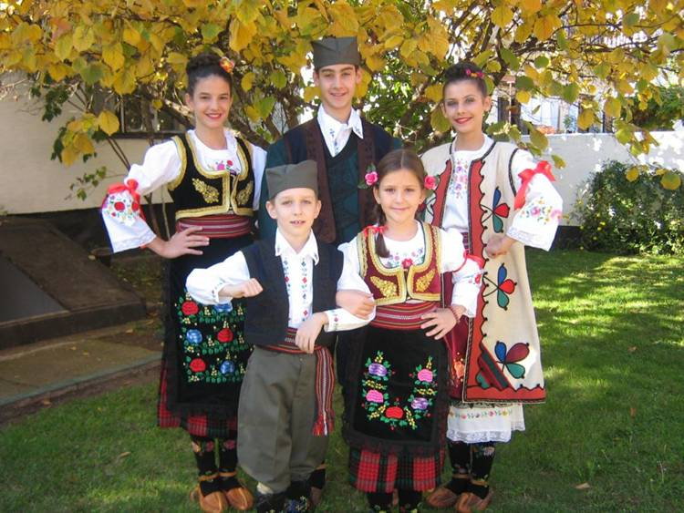
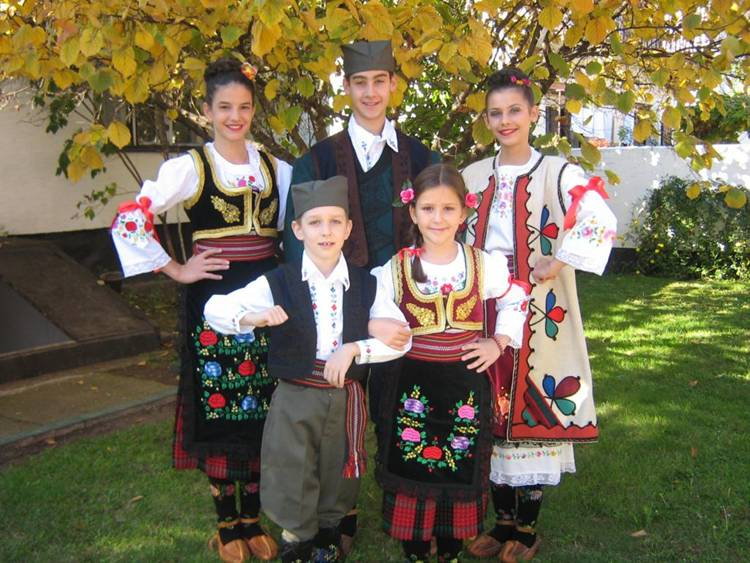

Dobrodošli u Srbiju
Zašto Srbija?
Srbija je zemlja bogate istorije, prelepe prirode i jedinstvene kulture. Ovde možete uživati u planinama, rekama i predivnim gradovima, dok tradicija i gostoprimstvo lokalnog stanovništva čine posetu nezaboravnom.
Od istorijskih spomenika do modernih gradskih sadržaja, Srbija nudi nešto za svakoga – od avanturista do ljubitelja umetnosti i gastronomije.
Posetite srednjovekovne manastire, uživajte u vinogradima i domaćoj hrani, ili istražite festivale i kulturne događaje širom zemlje. Svaki deo Srbije ima svoju priču, bogatu običajima i tradicijom, što je čini idealnom destinacijom za sve koji žele da iskuse autentičnu i raznoliku kulturu.
Bilo da planirate miran odmor u prirodi, avanturistički vikend ili putovanje, Srbija vas dočekuje sa toplinom i bogatstvom sadržaja koje ćete dugo pamtiti.
 
